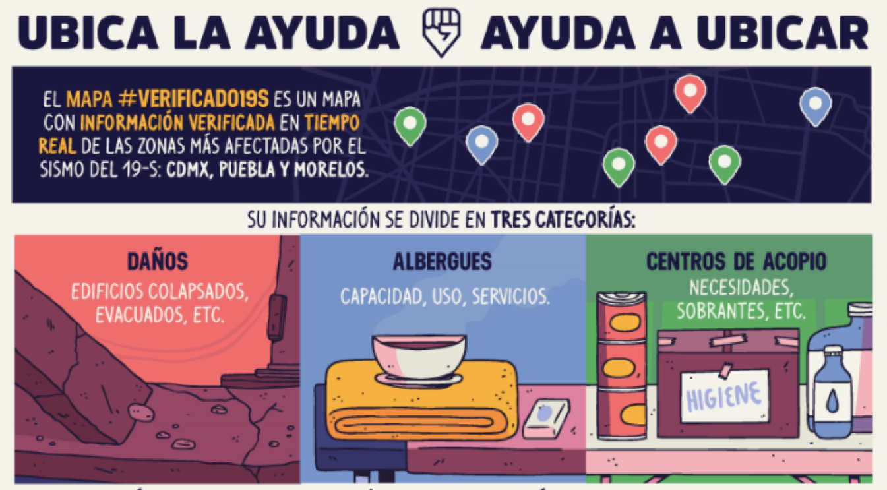
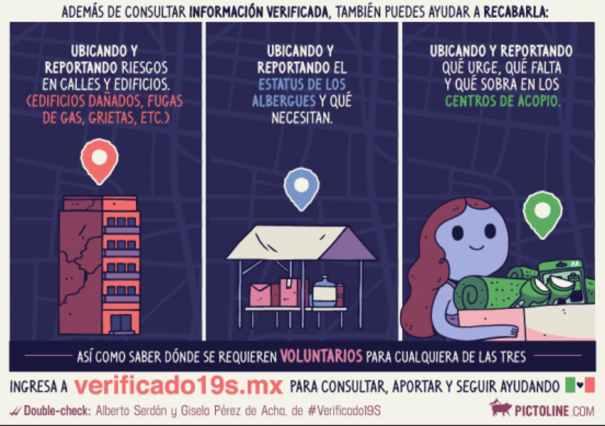

¿QUÉ HACEMOS?
A partir de la información que recibimos e integramos en nuestras bases de datos, generamos un mapa y coordinamos un equipo que corrobora la información sobre el terreno.
¿CÓMO PUEDES AYUDAR?
Compártenos información de daños, centros de acopio o albergues


REPORTA AQUÍ
Ayúdanos a confirmar la información que ya existe Usa la información para hacer más eficiente la respuesta ciudadana
MAPA
En este mapa también puedes ver
BASE DE DATOS DEL C-5
INFORMACIÓN DE MANOS A LA OBRA EN COLABORACIÓN CON HARVARD Y MIT
INFORMACIÓN DE LA ESTRATEGIA DIGITAL NACIONAL
¿QUÉ MÁS PUEDO HACER?
DONACIONES:
Si quieres donar cosas, pero no sabes a dónde ir consulta las siguientes cuentas de Twitter: